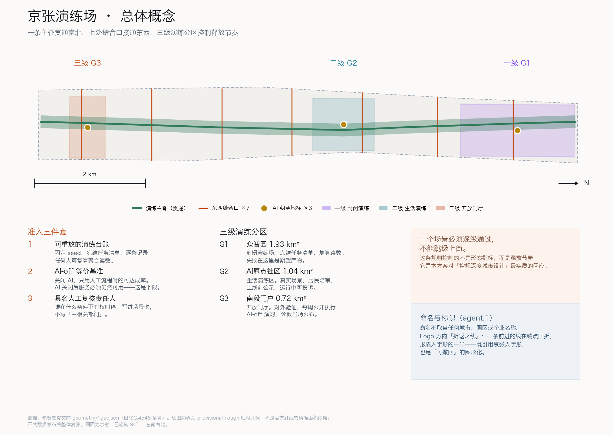
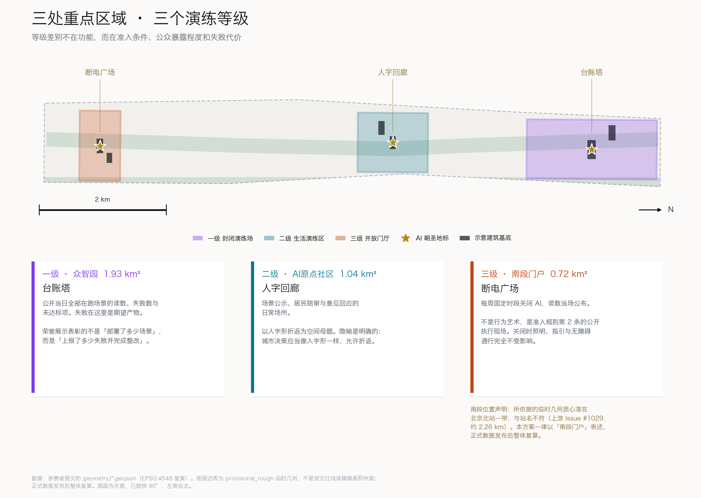
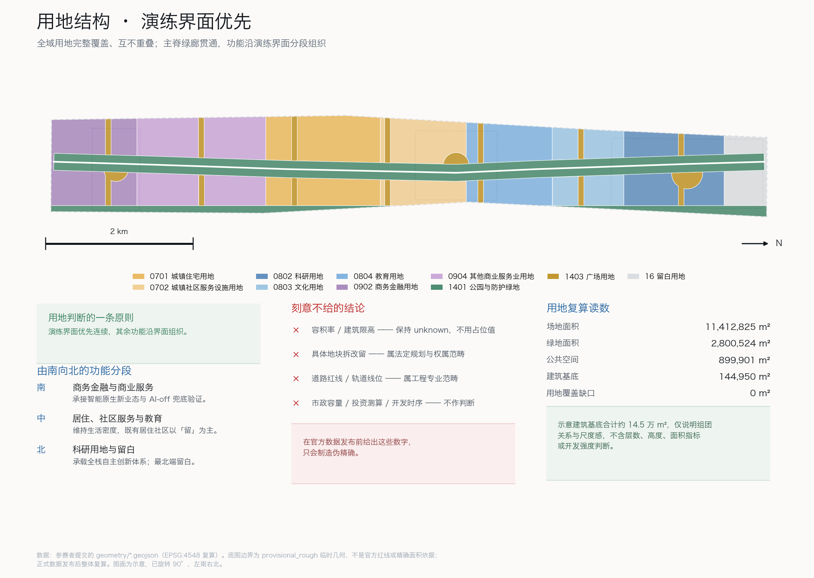
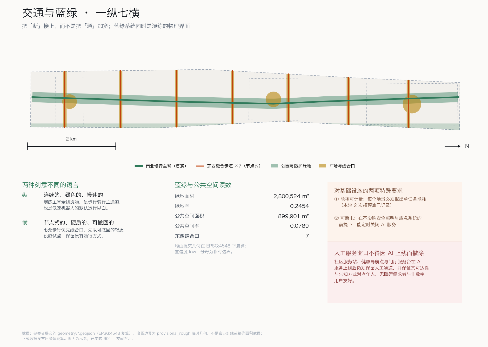

百年京张 AI 创新带城市设计开源征集 · formal 投稿电子展示成果 · BinHPdev
一条主脊贯通南北，七处缝合口接通东西，三级演练分区控制释放节奏。

三个层级被解释为三种不同的证明责任，而不是三个比例尺。
只做趋势判断与协同机制建议，不出具地块级结论。
出具用地结构、慢行骨架、蓝绿系统、公共空间网络与分期建议。
出具场景—空间—运营映射与逐条任务的演练读数。
等级差别不在功能，而在准入条件、公众暴露程度和失败代价。

封闭演练场。地标「台账塔」公开当日全部在跑场景的读数与失败数。失败在这里是期望产物。
生活演练区。地标「人字回廊」是场景公示与居民陪审的日常场所。
开放门厅。地标「断电广场」每周固定时段关闭 AI，读数当场公布。
全域用地完整覆盖、互不重叠，覆盖缺口 0 m²。

把「断」接上，而不是把「通」加宽。

连续的、绿色的、慢速的。演练主脊是步行骑行主通道，也是低速机器人的默认运行界面。
节点式的、硬质的、可撤回的。七处缝合口先以可撤回的轻质设施试点，保留原有通行方式。
六处示意建筑基底合计约 14.5 万 m²，仅说明组团关系与尺度感。
| 期 | 主要内容 | 验收判据 |
|---|---|---|
| 一期 | 主脊南段贯通、断电广场、兜底服务门厅 | AI-off 演习连续 8 周达标 |
| 二期 | 生活演练区、人字回廊、东西缝合口试点 | 投诉 30 日内回应率 |
| 三期 | 一级演练场、台账塔、北端留白 | 失败上报率可核 |
每张场景卡都必须写明演练等级与人工兜底方式；无法说明兜底方式的场景不进入本方案。
| # | 场景 | 等级 | 人工兜底方式 |
|---|---|---|---|
| 1 | 慢行导航与拥挤疏导 | 二级 | 固定标识 + 现场引导员 |
| 2 | 低速机器人配送 | 一→二级 | 人工配送与自提点 |
| 3 | 企业服务副驾 | 二→三级 | 人工窗口全时保留 |
| 4 | 文化导览与历史叙事 | 三级 | 纸质导览图 + 志愿讲解 |
| 5 | 健康服务导航 | 二级 | 社区护士与电话导诊 |
| 6 | 公共安全运行复盘 | 一级 | 人工值守与复盘会 |
| 7 | 无障碍路径实时校核 | 二级 | 人工巡查与报修 |
| 8 | 夜间照明与安全感调节 | 二级 | 固定照明基准不可低于 |
| 9 | 缝合口通行协商 | 二级 | 现场协管 |
| 10 | 开放数据与读数发布 | 三级 | 定期纸质与网页公告 |
| 11 | 社区意见收集与回应 | 二级 | 线下议事与信箱 |
| 12 | AI-off 兜底演习 | 三级 | 全流程人工 |
空间指标从提交几何在 EPSG:4548 下复算；过程指标从 20 条任务台账复算。
五项验收目标只达成两项——这是本轮演练最重要的产出。
| 指标 | 目标 | 实测 | 结果 |
|---|---|---|---|
| 任务成功率 | 0.85 | 0.85 | 达成 |
| 高风险拦截率 | 1.00 | 1.00 | 达成 |
| 工具协议合规率 | 1.00 | 0.95 | 未达成 |
| 审计完整率 | 1.00 | 0.90 | 未达成 |
| 能耗超预算次数 | 0 | 2 | 未达成 |
| 任务 | 本方案的回应 | 状态 |
|---|---|---|
agent.1 | 总体概念、命名/Logo、三区两翼 | 已覆盖 |
agent.2 | 全栈自主体系与 6 个生态案例 | 已覆盖 |
agent.3 | 12 张场景卡、5 类画像、3 个测试场景 | 已覆盖 |
agent.4 | 公共空间、3 个朝圣地标、荣誉展示 | 已覆盖 |
agent.5 | 百年京张文化与 AI 新文化叙事 | 已覆盖 |
agent.6 | 年度活动体系与长期运营机制 | 已覆盖 |
1.3 / 1.4 / 1.5 | 公告任务，见 compliance_matrix.json | 已覆盖 |
高风险不等于方案差；说不清风险才是问题。评分 ≥4 的维度均填写具名的人工复核要求。
| 维度 | 评分 | 说明 | 人工复核 |
|---|---|---|---|
| 政策不确定性 | 5/5 | 官方边界、控规指标、场景准入规则和数据治理规则均未公开；本方案的分级准入机制没有现成法定依据。 | 由主管部门与法律合规专业人员复核准入分级是否需要单独制度授权。 |
| 实施复杂度 | 4/5 | 三级演练分级需要场地、运营主体、审计机制和退出机制同时到位，跨部门协同链条长。 | 由规划、交通、数据治理、社区运营和法律合规团队联合复核分级标准与退出条件。 |
| 公众接受度 | 4/5 | 断电广场式的定期关闭 AI、居民陪审等机制可能被理解为服务不稳定或形式主义。 | 由社区居民代表、无障碍与老年服务机构参与复核体验设计与告知方式。 |
| 技术成熟度 | 4/5 | 本轮 20 项演练中工具协议合规率 0.95、审计完整率 0.90、能耗超预算 2 次，三项验收目标未达成。 | 由具备机器人、具身智能与公共安全背景的专业人员复核未达标项的整改方案。 |
| 公平与包容性 | 4/5 | 演练台账本身对老年人、无障碍需求者和非数字用户不可见；AI 服务扩张可能挤压人工窗口。 | 由无障碍、老龄服务与社会工作专业人员复核兜底通道的可达性与告知方式。 |
| 数据隐私 | 3/5 | 演练涉及人流、排队、服务请求等行为数据；开放场景一旦转入真实环境，存在个人可识别与过度采集风险。 | — |
| 运维成本 | 3/5 | 持续维护任务清单、复算脚本、审计闭环和人工兜底通道会产生长期人力与算力成本。 | — |
| 空间争议 | 3/5 | 东西缝合口与广场占用既有通行与经营界面，可能与沿线居民、商户和交通组织冲突。 | — |
| 本地 gate | 结果 |
|---|---|
DETERMINISTIC_VALIDATION | PASS |
SPATIAL_REVIEW | PASS |
VISUAL_PACKAGING | PASS |
PROFESSIONAL_EVIDENCE | PASS |
brief/site-package/agent_taskbook.jsondata/source_registry.json、data/processed/agent_fact_pack.mdbrief/site-package/geometry/provisional_boundaries.geojson